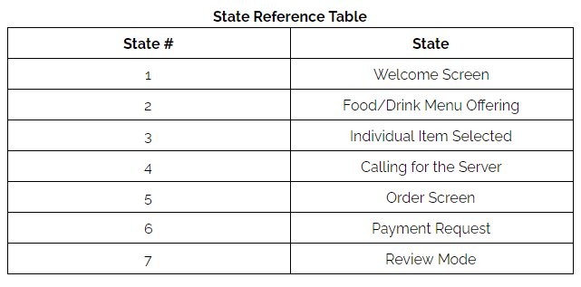
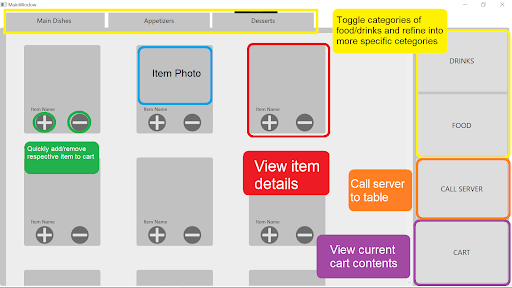
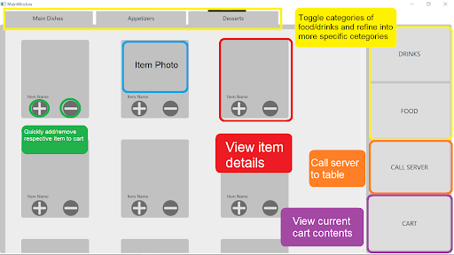
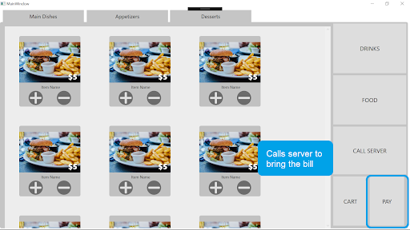
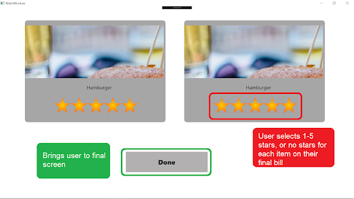

Tablet application to replace a restaurant menu.
Objective
This project was done for my Human Computer Interaction course. The goal was to create a successful network of user flows that let the user successfully order food from a tablet, and thus eliminating much of the inefficiencies in food-server work. We also wanted it to be a tool that could help a restaurant gather user reviews, which users can also see. This way the customer can know they're getting something good, and the owner can adjust the menu according to customer preferences.
My Role
This project was completed by me and three other group members. The work was evenly distributed in collecting requirements, and brainstorming solutions. This team worked incredibly well and we were able to distribute the technical workload quite evenly as well. My team members laid much of the user interface out, and I wrote event handlers for most of the interactions that would change views, and order details.
Skills
- C#
- WPF
- Usability Testing
- Designing with Personas
Process
Once we had a clear vision of our requirements we began making personas. We made generally varied the personas by how traditional the user was, how much they valued convenience, and how technologically adept they were. From there we started compiling all the necessary states our application would need.
We decided which states needed to transition to each other and started making paper prototypes. My group role played different personas and tried to find short comings in our interactions. Once we were confident in our user flows we started to create static digital prototypes.
 

Outcome
We ended up creating a robust set of interactions that were intuitive. We looked at many other applications and tried to come up with a set of common heuristics to utilize in our own application. We didn't rely too heavily on this however because it disadvantaged many people who aren't as adept with technology.
We found it helpful during user interviews to be able to add food items in multiple different views. Specifically adjusting quantities within the cart so that the user didn't have to navigate to the specific food item again. We also successfully utilized reviews (though with no back-end since this was purely an interface design).
